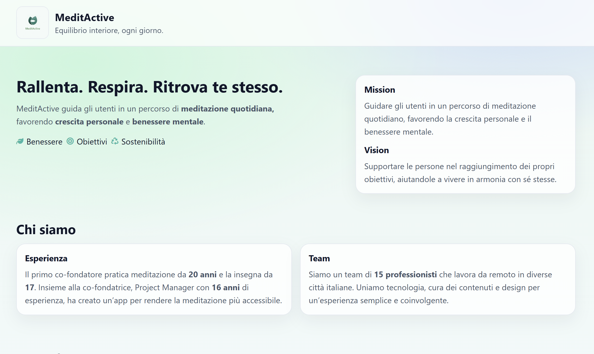
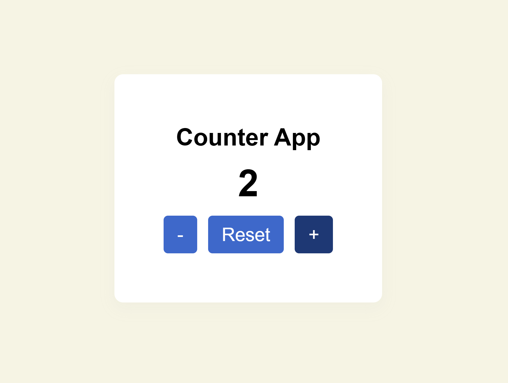
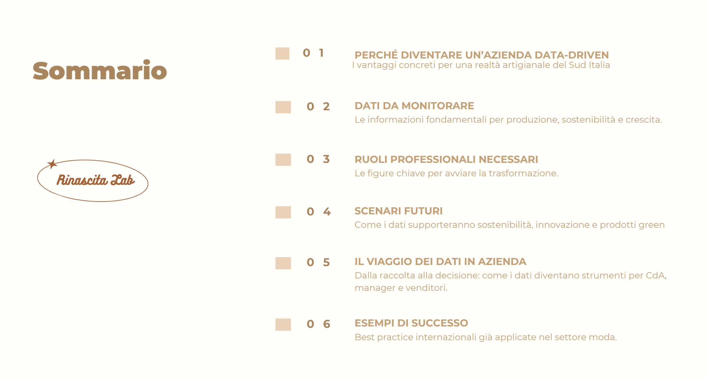
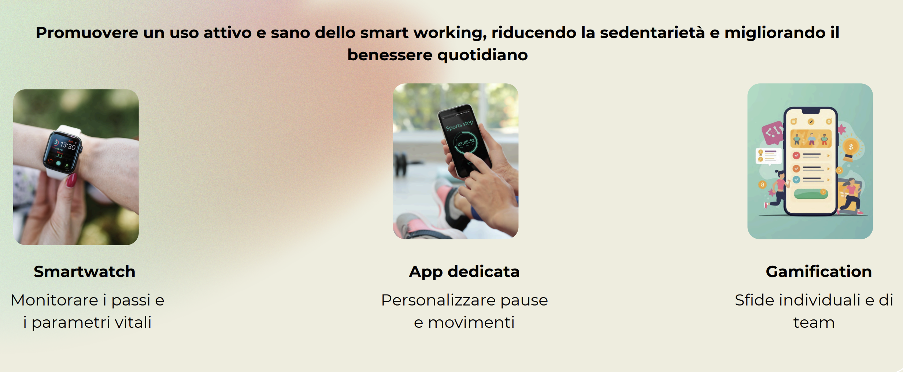

Landing Page
MeditActive
Landing page dedicata a meditazione quotidiana, crescita personale e benessere mentale, con focus su struttura chiara e comunicazione visiva.
Ciao, sono Maria Rossi. Progetto e sviluppo pagine web chiare, ordinate e facili da usare. Mi piace trasformare idee e layout in interfacce moderne, mantenibili e visivamente coerenti.
Sono una frontend developer con una forte attenzione all’organizzazione del codice, alla pulizia visiva e alla leggibilità delle interfacce. Lavoro con HTML, CSS, Bootstrap e SCSS, costruendo layout responsive e componenti coerenti.
Mi piace curare i dettagli: spaziature, gerarchia tipografica, allineamenti, stati hover e coerenza tra le sezioni. Cerco sempre un equilibrio tra semplicità, precisione e personalità.
Fuori dal codice amo il trekking, il movimento e tutto ciò che richiede costanza, attenzione e spirito pratico.
Una selezione di progetti sviluppati durante il mio percorso formativo tra web development, data analysis e data science.

Landing Page
Landing page dedicata a meditazione quotidiana, crescita personale e benessere mentale, con focus su struttura chiara e comunicazione visiva.

JavaScript Project
Mini progetto JavaScript orientato alla manipolazione del DOM e alla costruzione di una semplice interfaccia dinamica.

Case Study PDF
Presentazione strategica su trasformazione data-driven, sostenibilità e ottimizzazione dei processi in un business case del settore moda.

Case Study PDF
Progetto concettuale su sedentarietà, machine learning e benessere digitale con attenzione a KPI, impatto e ruoli professionali.